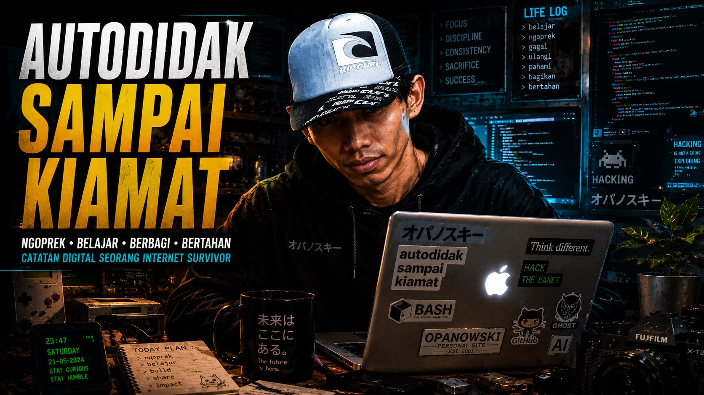
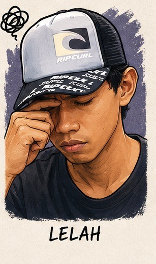

Siapa bilang bikin website itu harus ngerti coding dulu? Di era 2026 ini, gw — autodidak dari Ciracas, bukan programmer, bukan developer — berhasil bikin website pribadi yang proper hanya dalam 3 hari. Senjatanya? Tiga AI sekaligus.
Ini bukan kebetulan. Ini strategi.
1. Dulu vs Sekarang: Bikin Website Itu Mahal?
Dulu kalau lo mau punya website pribadi, ada dua jalan — dua-duanya menyiksa.
Opsi 1: Belajar coding sendiri — butuh berbulan-bulan, kurva belajar curam, belum tentu hasilnya bagus juga.
Opsi 2: Bayar developer — keluar jutaan rupiah, hasilnya belum tentu sesuai keinginan, dan lo masih gak ngerti gimana ubahnya kalau mau revisi.
2. Strategi: Orkestrasi 3 AI
Kuncinya bukan cuma pakai AI — tapi pakai AI yang tepat untuk tugas yang tepat. Kayak punya tim kecil yang masing-masing punya keahlian beda.
Lo tetap jadi mandornya. AI itu tukang yang jago — tapi lo yang harus tau mau bangunan kayak apa, bisa evaluasi hasil, dan berani bilang "ini bukan yang gw maksud, coba lagi."

📸 Bunker Opanowski — proses 3 hari bikin website dari nol
3. Kronologi: 3 Hari dari Nol
Hari 1 — Pondasi & Konsep. Modal: kopi, niat, dan Claude yang sabar.

"Hari pertama itu euforia. Semua keliatan mungkin. Belum tau di hari kedua bakal ketemu berapa error." ☕
Hari 2 — Eksekusi & Error. Ini hari yang paling melelahkan — dan paling banyak belajarnya.

"Hari kedua itu realita. Error demi error. Tapi tiap error yang kelar, ada kepuasan yang aneh — kayak nemu kunci yang lama ilang." 🔑
Hari 3 — Finishing & Deploy.

"Website live tengah malam. Nonton hasilnya sendiri di browser — ada perasaan yang susah dijelasin. Bangga? Lega? Dua-duanya." 🌐
4. Hasil Akhir: Apa yang Jadi?
5. Pelajaran: Yang Gw Ambil dari 3 Hari Ini
Jangan langsung minta AI nulisin kode. Mulai dengan ngobrolin konsepnya dulu — mau bikin apa, buat siapa, suasana yang lo mau kayak apa. Dari percakapan itu, kode akan ngikut sendiri.
📌 Penutup

"Website live, biaya nol, waktu 3 hari. Siapa bilang lo harus jadi developer dulu?" 😎
Kalau ada yang nanya "lo bikin sendiri?" — gw jawab: "iya, dibantu tiga AI sekaligus." Dan itu tetap bikin sendiri.
Hardware ga nentuin. Background ga nentuin. Yang nentuin: kemauan buat duduk, ngobrolin ide sama AI, dan iterasi sampai hasilnya bener.
Bunker Opanowski dibangun dari MacBook 2015 yang udah "uzur" dan tiga AI gratisan. Hasilnya? Lo lagi baca ini sekarang. 🏴
Tetap autodidak, tetap berkah! 🏴Lo juga punya cerita bikin website tanpa coding? Share di kolom komentar! 🌐